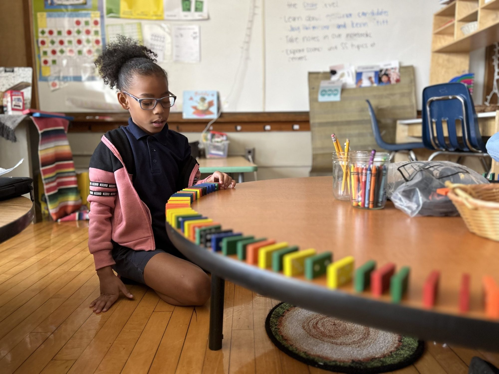

幼兒啟蒙
幼兒啟蒙
- New i Fun
以字母、發音、基本對話為主軸，搭配輕快的發音韻文與歌曲。
- Fun with ABC
26 字母筆順教學與摹寫，奠定紮實英語基礎。
國小基礎
國小基礎
- Phonics GO
最完善好用的進口自然發音兒美教材，符合學習認知邏輯性。
- Grammar for Young Learners
帶領兒童從初級文法循序進階到中級文法。
檢定考試
檢定考試
- 新全民英檢系列
提點重要文法觀念與解題技巧，輕鬆破解考題。
- SMART 新式多益
精心規劃之 20 天讀書計畫，快速理解題型與策略。

讀本系列
讀本系列
- Fun Reader
用有趣好玩的互動模式，讓小朋友不再害怕英語閱讀。
- Reading Box
獨家引進美國 Scholastic 精選讀本，與國際接軌。
為什麼選擇劍橋 YLE？
劍橋兒童英語認證（YLE）是一系列有趣、具啟發性的英語測試，旨在鼓勵學童學習並建立自信。測試內容貼近日常生活，透過活潑的情境讓孩子展現學習成果。

Pre A1
Starters
第一階段：適合剛開始學習英語的學童，建立對單字與簡單句型的基礎認知。
A1
Movers
第二階段：學童能理解簡單指令、參與基本對話，並具備初步讀寫能力。
A2
Flyers
第三階段：適合國小高年級學童，程度相當於全民英檢初級，處理更複雜的情境。
YLE 與 CEFR 國際標準對照表
| YLE 級別 | CEFR 等級 | 建議學習時數 | 對應能力 |
|---|---|---|---|
| Starters | Pre A1 | 約 100 小時 | 能聽懂簡單日常用語，認識基本單字。 |
| Movers | A1 | 約 175 小時 | 能參與基本溝通，理解簡單文章與圖表。 |
| Flyers | A2 | 約 250 小時 | 能處理日常社交對話，撰寫簡單短文。 |